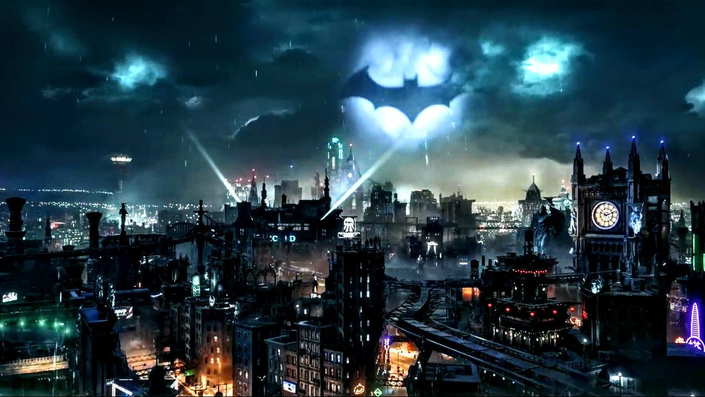

El Joker crea el caos en Ciudad Gótica

El infame criminal conocido como el Joker ha desatado el caos una vez más en las calles de Ciudad Gótica. Las autoridades están en alerta máxima mientras intentan contener sus actividades delictivas.
En las enigmáticas calles de Ciudad Gótica, un aura de caos y locura se apodera de la ciudad cuando el infame Joker decide llevar a cabo una serie de actos vandálicos y caóticos por mera diversión. Sin la presencia del Caballero Oscuro, Batman, para detenerlo, el Joker ve la oportunidad perfecta para sembrar el pánico y la anarquía en la ciudad que tanto ama o desprecia.
Sus actos van desde pintar murales obscenos en edificios emblemáticos hasta liberar hordas de animales exóticos en parques públicos. Incendios provocados, explosiones de confeti y dispositivos de sonido estridentes son solo algunas de las artimañas que utiliza el Joker para mantener a la ciudad en un estado de constante terror y confusión.
La policía de la ciudad se ve abrumada por la ola de crímenes sin precedentes, mientras el Joker se burla de sus esfuerzos y desafía a las autoridades a atraparlo. Con su ingenio retorcido y su imprevisibilidad, el Joker elude todos los intentos de captura, dejando tras de sí una estela de destrucción y caos.
Los ciudadanos de Ciudad Gótica se encuentran atrapados en medio de una pesadilla viviente, sin esperanza de encontrar seguridad o consuelo. Las calles se convierten en campos de batalla donde el miedo y la anarquía reinan supremos, mientras el Joker continúa desplegando su locura sin límites.
Con cada acto de violencia y destrucción, el Joker se adentra más en las sombras de la ciudad, convirtiéndose en una figura de terror que acecha en cada esquina. Su risa estridente se convierte en un eco ominoso que resuena en los corazones de los ciudadanos, recordándoles que en Ciudad Gótica, el mal nunca duerme.
Y así, mientras la ciudad se sumerge más y más en el caos, el Joker se regocija en el caos que ha creado, saboreando cada momento de su retorcida obra maestra de destrucción. Sin Batman para detenerlo, el Príncipe Payaso del Crimen reina supremo en Ciudad Gótica, donde la oscuridad y la locura son sus únicos soberanos.
Leer más...
El Pingüino planea un robo masivo

El astuto delincuente conocido como el Pingüino está tramando un robo masivo en el centro de Ciudad Gótica. Se cree que tiene un plan elaborado que podría poner en peligro la seguridad de la ciudad.
En las sombrías y enrevesadas calles de Ciudad Gótica, el caos se desata cuando el infame Pinguino decide llevar a cabo un atrevido robo a uno de los bancos más importantes de la ciudad. Sin la presencia del vigilante enmascarado, Batman, para frustrar sus planes, el Pinguino ve una oportunidad única para enriquecerse a costa del sufrimiento de la ciudad.
Todo comienza en una noche fría y lluviosa, cuando el Pinguino, acompañado por su banda de matones, irrumpen en el Banco Central de Ciudad Gótica. Ataviado con su distintivo sombrero de copa y su paraguas modificado para la ocasión, el Pinguino comienza su meticuloso asalto, desactivando alarmas y neutralizando guardias con astucia y precisión.
El sonido de las sirenas de la policía pronto llena el aire mientras el Pinguino y sus secuaces se apresuran a recoger todo el dinero y los objetos de valor que pueden llevar consigo. Las calles cercanas al banco se convierten en un campo de batalla caótico, con los agentes de la ley luchando por contener el pandemónium desatado por el astuto criminal.
Mientras tanto, los ciudadanos de Ciudad Gótica se encuentran atrapados en medio del caos, observando impotentes mientras el Pinguino y su banda saquean el banco sin piedad. Con cada segundo que pasa, el miedo y la incertidumbre se apoderan de la ciudad, mientras el Pinguino continúa con su implacable búsqueda de riqueza y poder.
A pesar de los esfuerzos desesperados de la policía por detenerlo, el Pinguino demuestra ser un adversario formidable, utilizando su ingenio y sus recursos para evadir la captura y continuar con su robo sin obstáculos. Los intentos de negociación y rendición son en vano, ya que el Pinguino está decidido a lograr su objetivo a cualquier costo.
Mientras el reloj sigue avanzando, la situación en Ciudad Gótica se vuelve cada vez más desesperada. Sin la ayuda de Batman para protegerlos, los ciudadanos se ven obligados a enfrentarse solos al peligro que acecha en las sombras de su ciudad. Y aunque el Pinguino pueda salirse con la suya esta vez, la oscuridad y la corrupción que ha sembrado en Ciudad Gótica solo sirven como un sombrío recordatorio de la necesidad constante de un protector enmascarado que defienda la ciudad del mal que acecha en sus calles.
Leer más...
Bane aterroriza el Estadio de Ciudad Gótica

El infame criminal Bane sembró el caos y el terror en el Estadio de Ciudad Gótica durante un evento deportivo esta noche. Testigos reportan que el villano irrumpió en el estadio acompañado por su temible banda de seguidores, desatando el pánico entre los asistentes.
Con su imponente presencia y su fuerza descomunal, Bane amenazó a los espectadores exigiendo un rescate exorbitante a cambio de su liberación. Utilizando su característica máscara y su intimidante voz, el villano impuso su voluntad sobre la multitud atónita.
Las autoridades, incluido el propio Batman, rápidamente se movilizaron para contener la situación, pero Bane demostró ser un adversario formidable. La confrontación resultó en una batalla épica entre el Caballero Oscuro y el monstruoso criminal, mientras el estadio temblaba bajo la intensidad del enfrentamiento.
A pesar de los esfuerzos del héroe enmascarado, Bane logró escapar del estadio, dejando tras de sí un rastro de destrucción y caos. La ciudad se encuentra en alerta máxima mientras las autoridades trabajan para localizar al peligroso delincuente y garantizar la seguridad de sus ciudadanos.
Leer más...
Acerca de esta Pagina

¡Bienvenido a Gótica NEW'S! Esta página web te sumergirá en el misterioso y fascinante mundo de una de las ciudades más emblemáticas del universo de DC Comics.
En Ciudad Gótica, las calles están impregnadas de una atmósfera oscura y peligrosa, donde los villanos acechan en cada esquina y la justicia lucha incansablemente por prevalecer. Desde los callejones del temible Barrio Monárquico hasta los rascacielos de la próspera Ciudad Gótica Central, cada distrito tiene su propia historia por descubrir y sus propios desafíos que superar.
En esta página,encontrarás noticias y actualizaciones sobre los últimos eventos que sacuden la ciudad, explorarás no solo la vida y las hazañas del legendario Caballero de la Noche, Batman, sino también conocerás a sus icónicos aliados y enemigos. Desde el siniestro Joker hasta el astuto Pingüino, te sumergirás en las complejas relaciones y las intrigantes tramas que dan forma al universo de Ciudad Gótica.